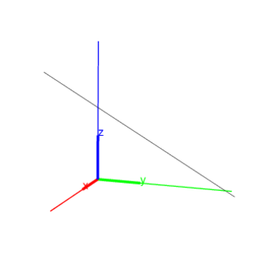
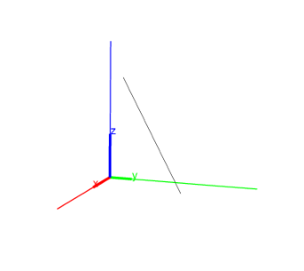
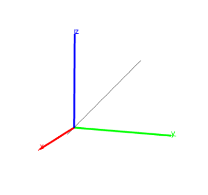

14.5.1 Lines and directed lines in space: line
See Section 13.7.1 for lines in the plane.
The line command returns and draws a directed line. It can
take its arguments in different ways.
Two points:
-
line can take two arguments:
P,Q, two points (which can also be given as a list).
- line(P,Q) returns and draws the line whose
direction is from the P to Q.
Example
Input:
line([0,3,0],point(3,0,3))
Output:

A point and a direction vector.
-
line can take two arguments:
-
P, a point.
- [u1,u2,u3], a direction vector.
- line(P,[u1,u2,u3]) returns and draws the line
through the given point with the direction given by the direction vector.
Example
Input:
line([0,3,0],[3,0,3])
Output:

Two planes.
-
line can take two arguments:
eqn1,eqn2, the equations of two planes.
- line(eqn1,eqn2) returns and
draws the line which is the intersection of the planes.
The direction of this line is given by the cross-product of the
normals for the planes. For example, the intersection of the planes
x=y (normal (1,−1,0)) and y=z (normal (0,1,−1)) will be
(1,−1,0)× (0,1,−1) = (1,1,1).
Example
Input:
line(x=y, y=z)
Output:
